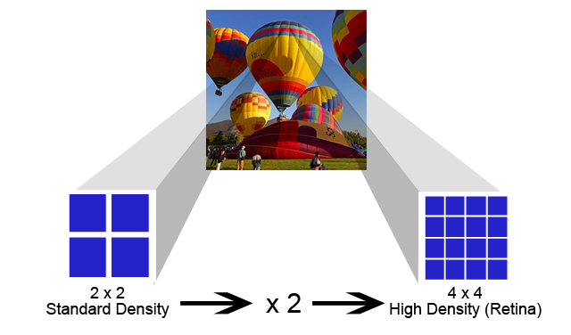
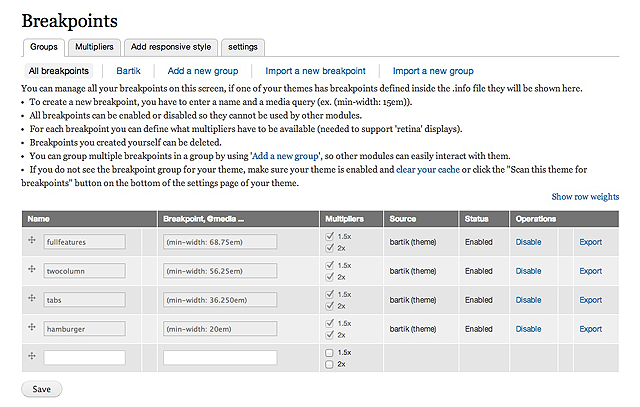
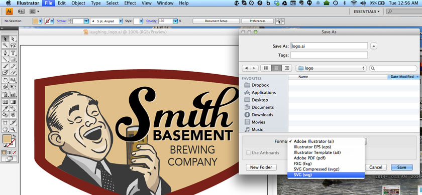

How much do you already know about
Making your Responsive Site
Picture Perfect?
Please take a moment to answer this brief survey:
Making your Responsive Site
Picture Perfect
Presented July 31, 2014 at Capital Camp and Gov Days '14
Jim Smith

- Oak Ridge, Tenn.
- Front-end Drupal Developer at DSFederal
- Started using Drupal in 2005
- Drupal user #16880
Get a copy of this Presentation
Download PDF at
https://github.com/startinggravity/picture-perfect-drupal/Making_your_Responsive_Site_Picture_Perfect.pdf
Download code at
https://github.com/startinggravity/picture-perfect-drupal
Where are we trying to go?
Great looking websites
...that look good on any device
Easy Responsive Images
img {
max-width: 100%;
height: auto;
}
Except...
This won't work on IE 6 or 7
http://sassmeister.com/gist/startinggravity/4f7f692eb60e92c23ece
Easy Responsive Images for IE 6 & 7
img {
width: 100%;
height: auto;
}
Thank You
You didn't really think it would be
that easy, did you?
What's Wrong with the Easy Way?
img {
max-width: 100%;
height: auto;
}
One size does not fit all!
Display Size
One size does not fit all!
Pixel Density

For great images you must
use the right tools
What we'll use
- Media Queries
- Breakpoints
- CSS Preprocessor (Sass)
- Compass
- Sprites
- Icon Fonts
- Modernizr.js
- Vector Graphics (SVG)
And we'll use
- Picture Module
- Breakpoints Module
Before we get too far,
some definitions.
Breakpoint
A defined point in the display width where changes in the size and position of elements are made.
Media Query
A media type and at least one expression to define a style sheet's scope, such as width, height, or resolution.
Multiplier
A trigger for the use of high density (Retina) images.
CSS Preprocessor
A preprocessed language to parse code into CSS. This allows for variables, selector inheritance and other shorthand methods to be used to speed up coding and make the CSS more flexible.
Compass
Extends the use of Sass by providing reusable patterns.
Picture Module:Picturefill Polyfill goodness baked in!
Available now in Drupal 7
Included in core for Drupal 8
Picture Module


Breakpoints Module
Picture & Breakpoints Modules
Using these modules with Image Styles allows you to select images of different sizes for your breakpoints.
Picture & Breakpoints Modules
Trigger the use of high-density images.
Picture & Breakpoints Modules
High-density versions can be created automatically with Image Styles.
Picture & Breakpoints Modules
Define breakpoints first
@import "breakpoint";
@import "compass";
// min-width (by default) if only a number
$breakpoint-hamburger: 20em; // 320px
$breakpoint-tabs: 36.250em; // 580px
$breakpoint-twocolumn: 56.25em; // 900px
$breakpoint-fullfeatures: 68.75em; // 1100px
If you use Sass, use the Breakpoint Compass extension.
Picture & Breakpoints Modules
Set breakpoints in theme.info
; ========================================
; Breakpoints
; ========================================
breakpoints[fullfeatures] = (min-width: 68.75em)
multipliers[fullfeatures][] = 1.5x
multipliers[fullfeatures][] = 2x
breakpoints[twocolumn] = (min-width: 56.25em)
multipliers[twocolumn][] = 1.5x
multipliers[twocolumn][] = 2x
breakpoints[tabs] = (min-width: 36.250em)
multipliers[tabs][] = 1.5x
multipliers[tabs][] = 2x
breakpoints[hamburger] = (min-width: 20em)
multipliers[hamburger][] = 1.5x
multipliers[hamburger][] = 2x
Breakpoint order should be largest to smallest.
Picture & Breakpoints Modules
Breakpoints in theme.info will load automatically
Clear cache to see breakpoints in the configuration page.
Picture & Breakpoints Modules
Map images to breakpoints and multpliers
Picture & Breakpoints Modules
Picture & Breakpoints Modules
Done correctly, the right image for the display size and density will be delivered.
When Not to Use
Picture & Breakpoints Modules

Not every image is a photo, but
every image needs to be handled responsively.
Sprites
Several small images combined into a larger image and selected for display through CSS.
Sprites
.stars-half, .stars-one, .stars-one-half, .stars-two, .stars-two-half, .stars-three, .stars-three-half, .stars-four, .stars-four-half, .stars-five, .stars-none {
background-image: url("../images/sprite.png");
background-repeat: no-repeat;
display: inline-block;
}
.stars-half {
background-position: 0 0;
height: 17px;
width: 8px;
}
.stars-one {
background-position: -10px 0;
height: 17px;
width: 16px;
}
...
Several Ways to Make Sprites
- Photoshop or other image creation software
- Online tool, such as SpritePad
- Application, such as Sprite Master Web
Sprites Aren't Always
the Best Approach
- They use more bandwidth than you think.
- Download size != memory size.
- They are pain to maintain.
Another Way to Make Sprites
Use Compass and Sass to make your sprites on the fly!
- Much easier to maintain, update
- But also comes with costs
- Can slow stylesheet compilation time
- Can load up Sass file with many variables
Icon Fonts
Clean, resizable icons that can be used
regardless of browser or pixel density
Icon Fonts
- Scalable
- Small compared to images
- Change color, add text shadow with CSS
- No cross-browser compatibility issues
- Can't be complex; limited to one color
- Accessibility can be a tricky issue to solve
http://sassmeister.com/gist/startinggravity/70cb05adac7d5f386d1c
Create your own Icon Font set
Online tools let you create a custom set from multiple libraries.
- Fontello: http://fontello.com
- IcoMoon: http://icomoon.io/app
- Fontastic: http://fontastic.me
But wait,
there's one more way to
add icon fonts!
Font Awesome Library
& Font Awesome Module
All the advantages of icon fonts
in the convenience of a Drupal module.
Font Awesome Library
& Font Awesome Module
Several ways to use
Icon Fonts Sometimes Come Up Short
They're convenient and flexible,
but they miss the mark for most logos.
That's when you need vector (SVG) images.
Why SVG Images?
- Completely scalable
- Resolution independent
- No matter how large or small, only one file is served
- The file size is small
- Opens opportunities for CSS3 animation
Major browsers now support SVG Images
- Internet Explorer 9+
- Firefox 4+
- Chrome 4+
- Safari 4+
- Opera 9.5+
- Android 2.4+
Simple to save any vector as SVG

Add SVG images "the old fashioned way"

What happens when you must design for an older browser?
Modernizr to the rescue!
What happens when you must design for an older browser?
Modernizr tells you what you have to work with
and what you don't
What happens when you must design for an older browser?
Or run a pixel density media query with
the Breakpoint Compass extension!
#foo{
@include breakpoint($hidpi){
content:'Device Pixel Ratio of at least 1.5';
}
@include breakpoint($cross-reso){
content:'Cross Browser Resolution Query'
}
}
Know What Your Screen Can Display
Device pixel density tests

Know What Your Browser Can Display
Can I Use _____ ?
Know When You've Reached the Goal
- Image sizes change depending on design layout and context
- Images are optimized for high-dpi screens
- Images with different mime types are used when appropriate and when browsers support them
Thank You
(Again)
References
- Choosing A Responsive Image Solution
http://www.smashingmagazine.com/2013/07/08/choosing-a-responsive-image-solution - Picturefill Polyfill
http://scottjehl.github.io/picturefill - Responsive Images with Drupal using the Picture Module
http://www.ibeccreative.com/2014/06/Responsive-Images-with-Drupal-using-the-Picture-Module - Towards A Retina Web
http://www.smashingmagazine.com/2012/08/20/towards-retina-web
References
- Using Sass Breakpoints Effectively
http://www.mediacurrent.com/blog/using-breakpoints-effectively - Breakpoint Compass Extension
http://breakpoint-sass.com - Sass: Syntactically Awesome Style Sheets
http://sass-lang.com - Compass CSS Authoring Framework
http://compass-style.org - 7 Habits of Highly Effective Media Queries
http://bradfrostweb.com/blog/post/7-habits-of-highly-effective-media-queries
References
- SpritePad
http://wearekiss.com/spritepad - Sprite Master Web
http://www.mobinodo.com/spritemasterweb - Spriting With Compass
http://compass-style.org/help/tutorials/spriting - Font Awesome Vector Icons
http://fortawesome.github.io/Font-Awesome - The benefits of Scalable Vector Graphics (SVG)
http://www.appnovation.com/blog/benefits-scalable-vector-graphics-svg
References
- Inline SVG vs Icon Fonts [CAGEMATCH]
http://css-tricks.com/using-svg
Get a copy of this Presentation
Download PDF at
https://github.com/startinggravity/picture-perfect-drupal/Making_your_Responsive_Site_Picture_Perfect.pdf
Download code at
https://github.com/startinggravity/picture-perfect-drupal
Jim Smith
- Email: jim.smith@dsfederal.com
- Twitter: @_JimSmith_
- IRC: startinggravity